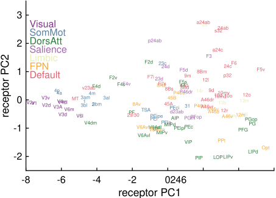
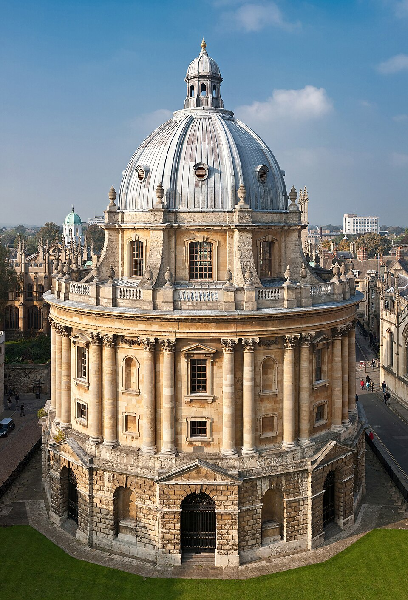
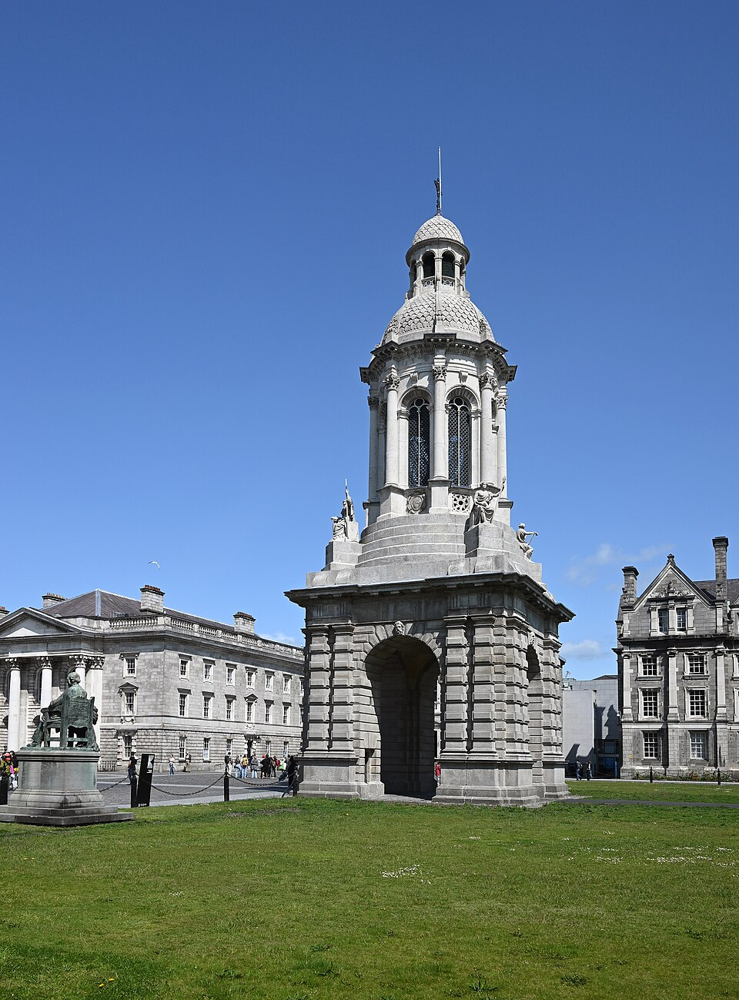
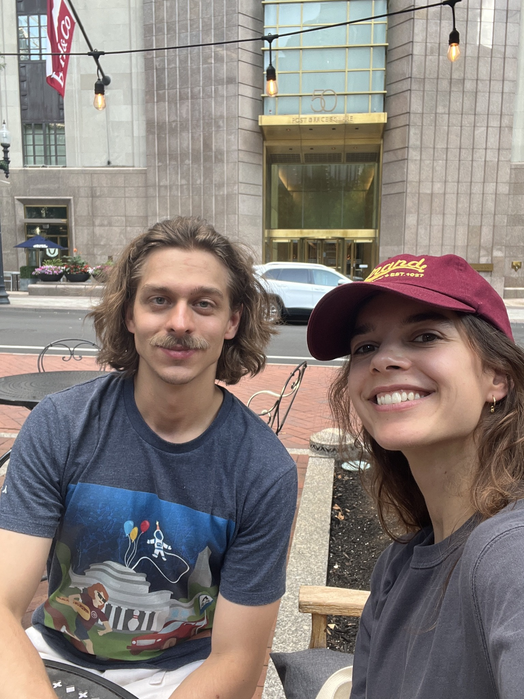
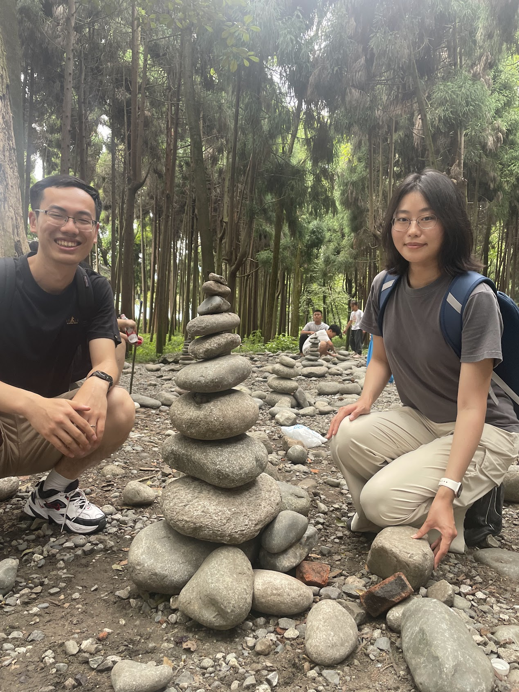
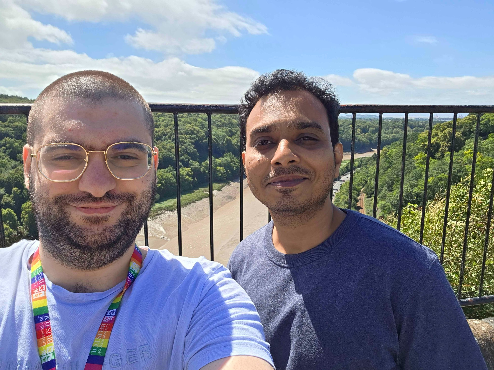
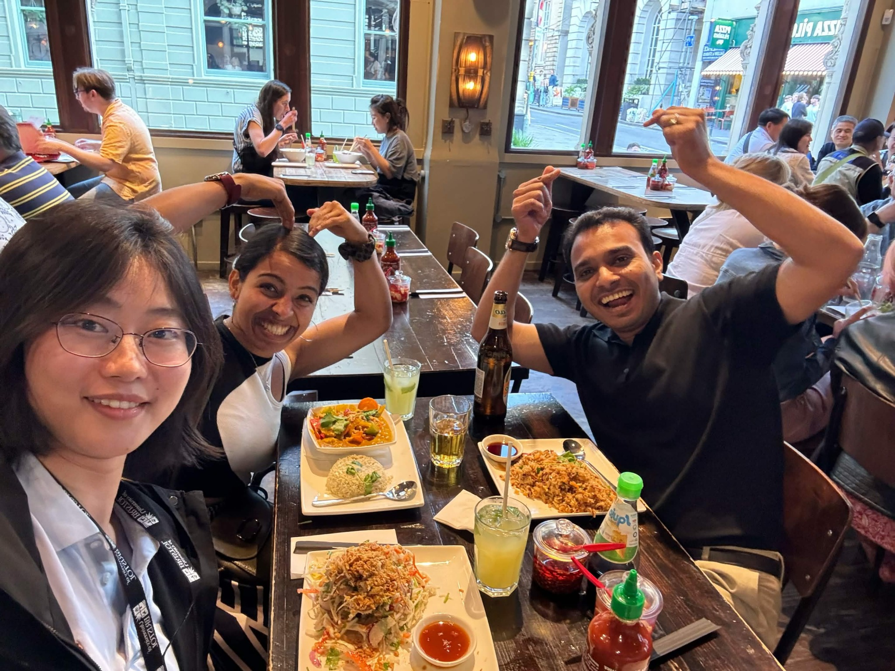
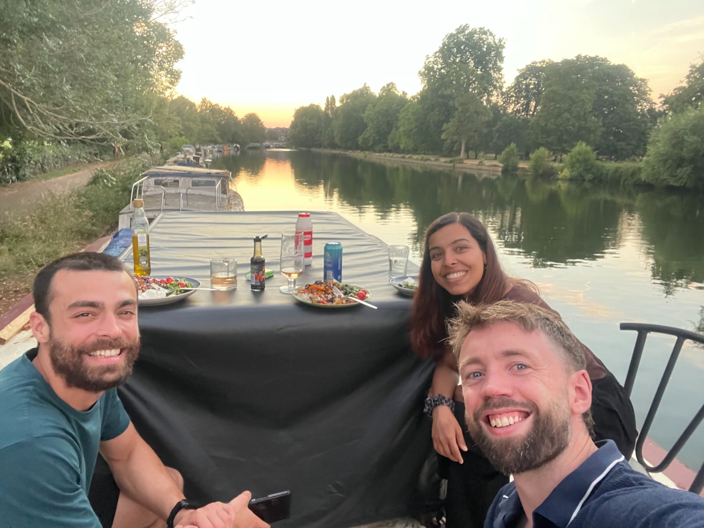
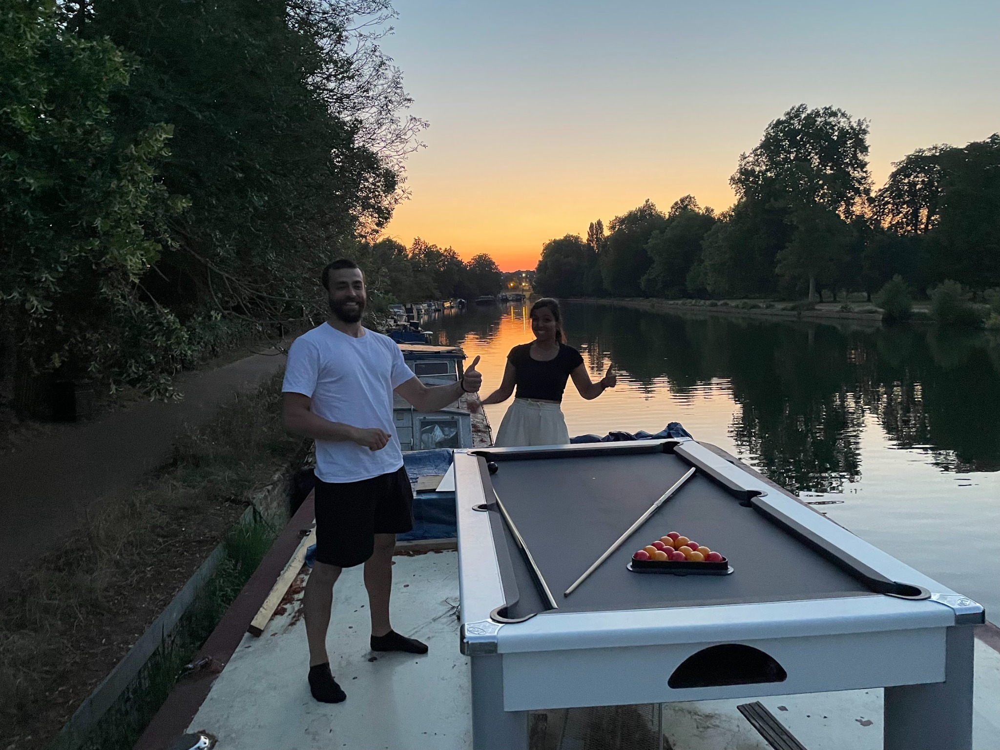

01


Cognition, Anatomy & Neural Networks
We build cortex-wide computational models to understand how anatomical organisation shapes neural dynamics, cognition and behaviour.
Research programme
We discover organising principles in cortical anatomy, build them into neural-network models, and test how they shape cognition.

Explore the lab
The lab name is also our research programme. Hover over a pillar, question, person or publication to see how the pieces connect across CANN.
The functions and representations we want to explain.
The biological structure that constrains computation.
Models linking anatomy to dynamics and cognition.
Conscious access, hallucinations and altered perception.
Distributed maintenance and flexible access to information.
How choices emerge across circuits, scales and species.
Future-state representations and internally generated cognition.
Stable organising features of cortex: gradients, wiring and spatial organisation.
Seconds to minutes: how receptor architecture enables rapid changes in circuit dynamics.
Months to years: persistent biological changes that reshape cognition in disease.
Across evolution: how species differences in cortical organisation change computation.
Task-trained models, including Cortically Embedded RNNs.
Mechanistic cortex-wide models grounded in cellular and synaptic physiology.
A dynamic bifurcation mechanism explains cortex-wide neural correlates of conscious access.
Molecular Psychiatry · 2025Purple et al.Short- and long-term modulation of rat prefrontal cortical activity following single doses of psilocybin.
Nature Neuroscience · 2023Froudist-Walsh et al.Gradients of neurotransmitter receptor expression in the macaque cortex.
Neuron · 2021Froudist-Walsh et al.A dopamine gradient controls access to distributed working memory in the large-scale monkey cortex.
eLife · 2024Ding et al.Cell type-specific connectome predicts distributed working memory activity in the mouse brain.
Communications Biology · 2025Joyce*, Ivanov* et al.Higher dopamine D1 receptor expression in prefrontal parvalbumin neurons underlies higher distractibility in marmosets versus macaques.
bioRxiv · 2025 Klatzmann et al.Spatial layout of visual specialization is shaped by competing default mode and sensory networks.
Cerebral Cortex · 2024 Magrou*, Joyce* et al.The meso-connectomes of mouse, marmoset, and macaque: network organization and the emergence of higher cognition.
Open science
We share modelling code, neuroimaging resources and anatomical datasets so results can be reproduced, extended and tested in new settings.
Code for cortical modelling, analysis and visualisation from the CANN group.
github.com/CANNgroup ↗People
We are a computational neuroscience and NeuroAI group working across the University of Oxford and Trinity College Dublin.
Lab life
The CANN group works across ideas, methods and places. We wanted the people section to feel a little more human and less like a directory — so this collage mixes conferences, outdoor trips, meals and informal moments from lab life.


Computational neuroscience and NeuroAI across Oxford and Trinity College Dublin.




Current members
Computational neuroscience, NeuroAI, neuromodulation, anatomy, cross-species modelling and computational psychiatry.
→ ESPhD studentNeuroAI, CERNNs and neuromodulation.
→ PhD studentDynamical systems, schizophrenia, neuromodulation and cross-species modelling.
→ PhD studentAnatomically constrained RNNs, planning and internally generated cognition.
→ PhD studentStress, catecholamines and cognition in large-scale brain networks.
→ Visiting PhD studentDecision-making, working memory and biophysical modelling of neural dynamics.
→Incoming team
Biophysical modelling of serotonin & dopamine effects on fMRI signals
→ PostdocYufan WangCortical anatomy · cross-species
→ PostdocJames McAllisterCross-species CERNN modelling
→ PhD studentNaomi CurnowCross-species CERNNs of decision-making
→Alumni
People directory →Beyond research
We want computational neuroscience to be rigorous, understandable and accessible — in the classroom and beyond the university.
Teaching
Courses spanning artificial intelligence, computational neuroscience and brain-inspired computation, plus an open teaching-video collection.
Teaching → 02Widening participation & outreach
From school outreach and public neuroscience to a new 2026/27 collaboration with Trinity Access Programmes.
Outreach →News
New papers, fellowships, talks and milestones from current and former lab members.
Watch Seán’s recent C-Radio interview, “Mystery of qualia: Bridging neurons and experience”, on the Neural basis of Consciousness & Qualia Structure channel.
Watch the interview →Seán will speak at Notre Dame London’s “Mind the Gap” symposium, UCL Consciousness Club on 28 October, and the University of Sheffield’s Psychology department on 17 November.
Dates and event details →Seán was resident faculty at the MESEC workshop “Computational Modelling for Consciousness Science: From Fragmentation to Integration” in Carcassonne, France. Ash Thrivikraman and Ulysse Klatzmann were among the co-organisers.
Workshop details ↗Seán has been elected to the Research Fellowship in the Sciences and Mathematics at St John's College, Oxford, beginning in October 2026.
Profile →Congratulations to recently graduated PhD student Ulysse Klatzmann, whose Impact+ Canada Fellowship will support his research in the Dumas Lab at Université de Montréal.
Alumni →Seán will collaborate with Trinity Access Programmes in 2026/27 to support pathways to Trinity for people from socio-economically disadvantaged backgrounds.
Outreach →Seán's UKRI Future Leaders Fellowship supports the lab's programme developing anatomy-driven AI models for translational neuroscience.
Read more →Collaborative work with Luppi et al. on competitive interactions across species is published in Nature Neuroscience; work with Oh et al. on state-dependent signal-flow hierarchy is in press.
Luppi et al. ↗Eva Sevenster has been accepted to the Mind, Brains & Machines summer school.
Eva's profile →Congratulations to former postdoc Rahul Gupta on becoming an Assistant Professor at University of Bristol, Mumbai.
Alumni →Congratulations to former short-term postdoc Dabal Pedamonti on becoming an Edge AI Engineer at Novomorphic.
Alumni →Seán gave an invited talk at the Chinese Computational & Cognitive Neuroscience conference in Chengdu, and Xiaohe Yu presented a poster.
Recorded talks →Eva Sevenster and Aswathi Thrivikraman gave a selected talk at Cosyne Portugal, with a selection rate below 2.5%.
Watch ↗